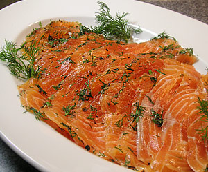

Gravad Lax (Gebeizter Lachs, original "vergrabener" Lachs)
5 von 61 kg Lachsfilet mit Haut in zwei Stücken mariniert mit: ca. 50 g Salz und 50 g Zucker, 10 zerstossene Körner weisser Pfeffer und 5 Wachholderbeeren, viel gehackter Dill sowie einige ganze Zweige. Mit der Innenseite aufeinander legen und mit einem Teller zudecken, gut beschweren. Mind. 48 Stunden im Kühlschrank (ca. 5 Grad) ziehen lassen. Der Gravad Lax erreicht durch die Zucker-Salz-Marinade eine Art Garung, wechler ihn bis zu 5 Tage haltbar macht (Nasentest). Die Filets vor dem Servieren in feine Tranchen schneiden.
Dazu wird folgende Senfsauce serviert: 2 El Senf, 1 El Zucker, ein Eigelb, 1-2 Esslöffel Apfelessig, 1 dl Sonnenblumenöl sowie gehackte Dillspitzen miteinander vermengen. Mit Salz und weissem Pfeffer abschmecken. Dazu Salzkartoffeln servieren.
